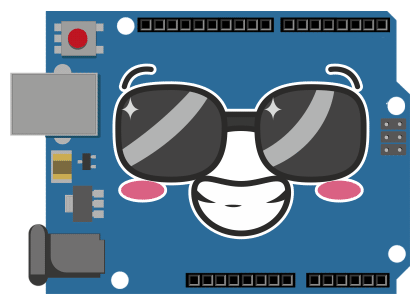
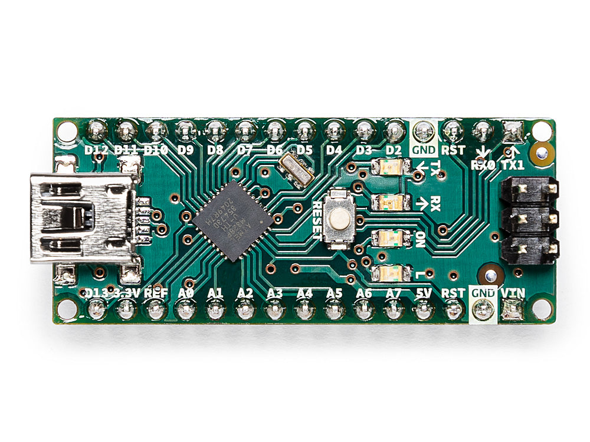
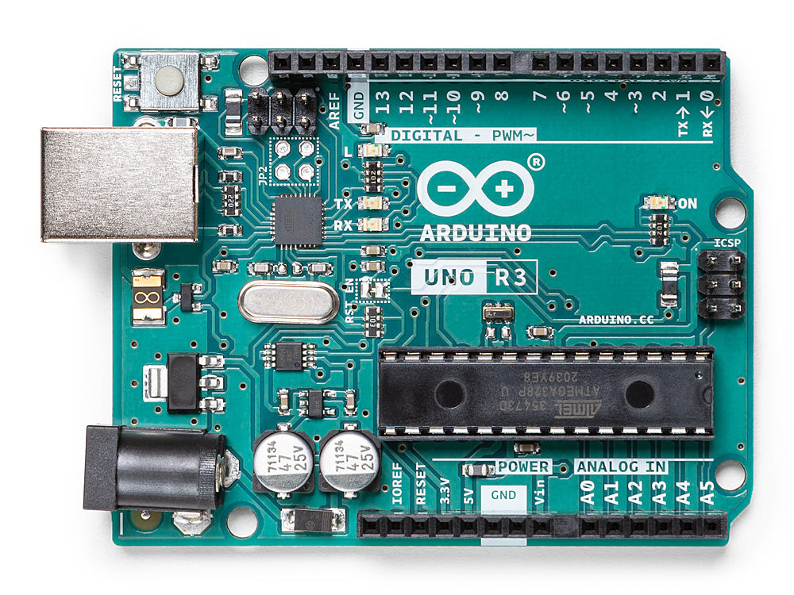
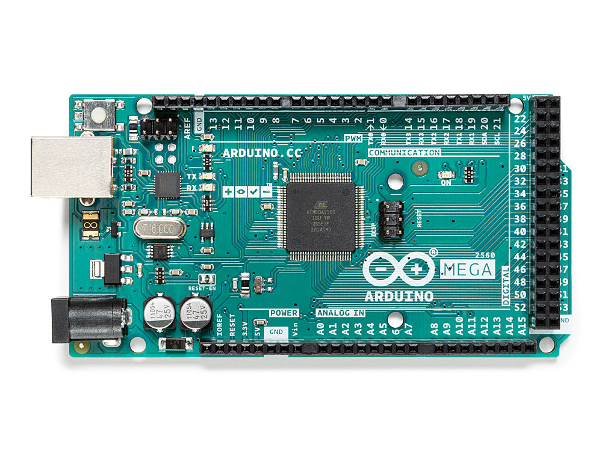

Arduino is an open-source electronics platform based on easy-to-use hardware and software. Arduino boards are able to read inputs - light on a sensor, a finger on a button, or a Twitter message - and turn it into an output - activating a motor, turning on an LED, publishing something online. You can tell your board what to do by sending a set of instructions to the microcontroller on the board. To do so you use the Arduino programming language (based on Wiring), and the Arduino Software (IDE), based on Processing. 
Arduino Nano
The Arduino Nano is a small, complete, and breadboard-friendly board based on the ATmega328 (Arduino Nano 3.x). It has more or less the same functionality of the Arduino Duemilanove, but in a different package. It lacks only a DC power jack, and works with a Mini-B USB cable instead of a standard one.
Arduino Uno
Arduino Uno is a microcontroller board based on the ATmega328P. "Uno" means one in Italian and was chosen to mark the release of Arduino Software (IDE) 1.0. The Uno board and version 1.0 of Arduino Software (IDE) were the reference versions of Arduino, now evolved to newer releases.
Arduino Mega2560
The Arduino Mega 2560 is a microcontroller board based on the ATmega2560. It contains everything needed to support the microcontroller, simply connect it to a computer with a USB cable or power it with a AC-to-DC adapter or battery to get started. The Mega 2560 board is compatible with most shields designed for the Uno and the former boards Duemilanove or Diecimila.

| Сharacteristic | Value |
|---|---|
| Microcontroller | ATmega328 |
| Digital I/O Pins | 22(6 of which are PWM) |
| Clock speed | 16 MHz |
| Flash memory | 32 KB of which 2 KB used by bootloader |
| Сharacteristic | Value |
|---|---|
| Microcontroller | ATmega328P |
| Digital I/O Pins | 14(of which 6 provide PWM output) |
| Clock speed | 16 MHz |
| Flash memory | 32 KB (ATmega328P) of which 0.5 KB used by bootloader |
| Сharacteristic | Value |
|---|---|
| Microcontroller | ATmega2560 |
| Digital I/O Pins | 54(of which 15 provide PWM output) |
| Clock speed | 16 MHz |
| Flash memory | 256 KB of which 8 KB used by bootloader |